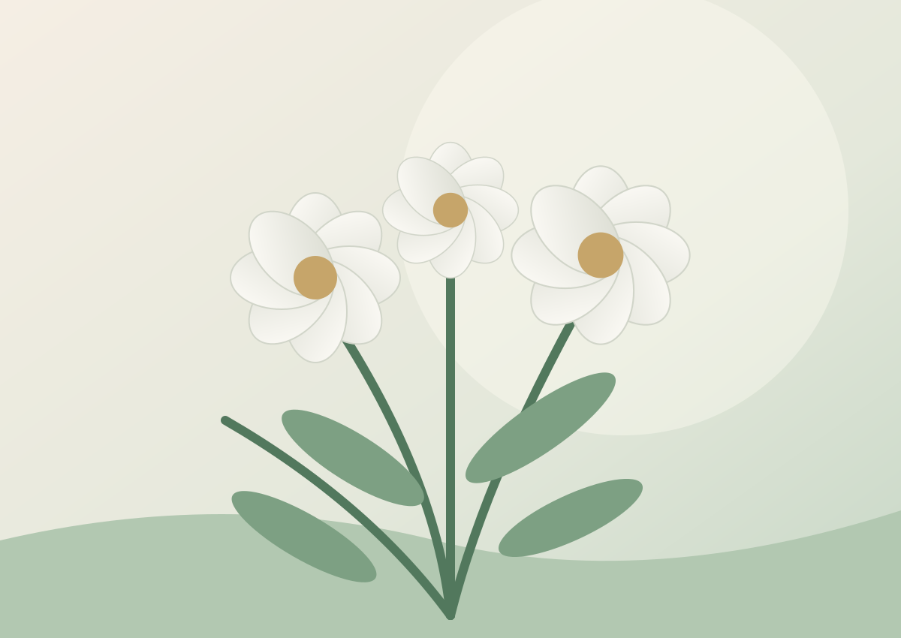

خاطرات خانوادگی
لحظههایی از خانه، سفرها، جشنها و روزمرگیها.
خاطرات کوچک و روایتهای خانوادگی کمک میکنند تصویر انسانی عزیزان برای نسلهای بعد زنده بماند.
شروع یک یادمان ←

یک جمله بهیادماندنی، یک خاطره از کودکی، یک مهربانی یا درسی که از عزیزتان آموختهاید؛ همه میتوانند بخشی از روایت زندگی او باشند.
ثبت خاطره در صفحه نخست ←لحظههایی از خانه، سفرها، جشنها و روزمرگیها.
مهربانیها، باورها و رفتارهایی که در یاد ماندهاند.
شرح عکسهای قدیمی و نام افرادی که در آنها حضور دارند.